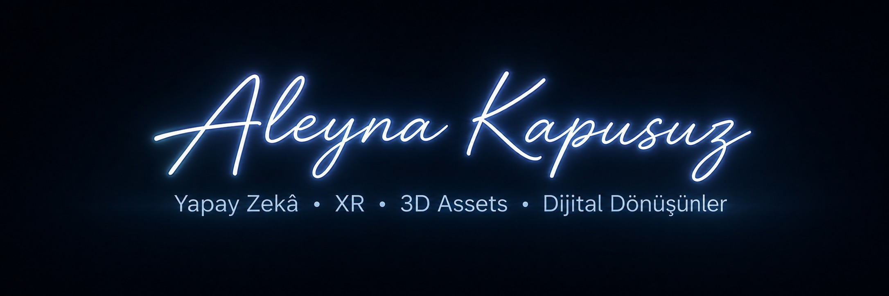
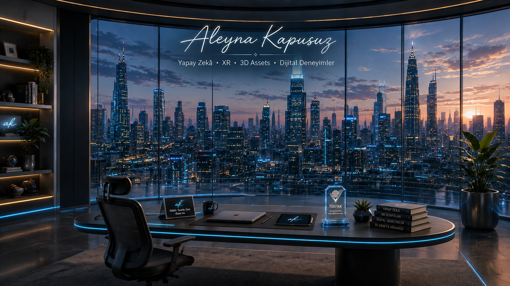
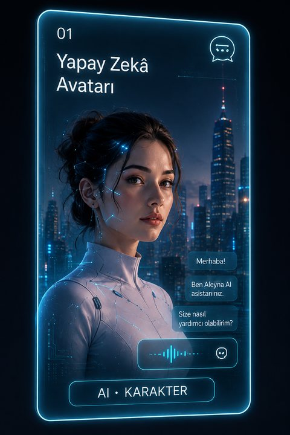
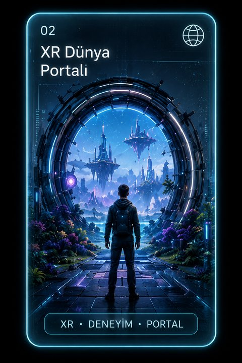
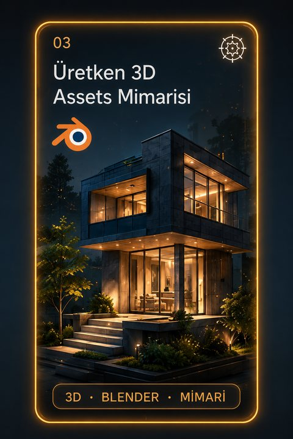
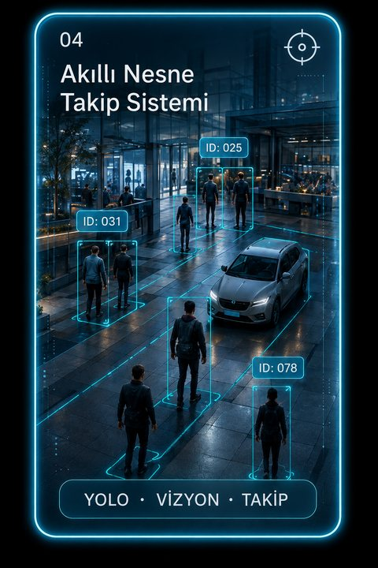
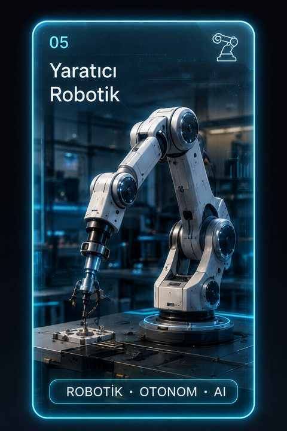
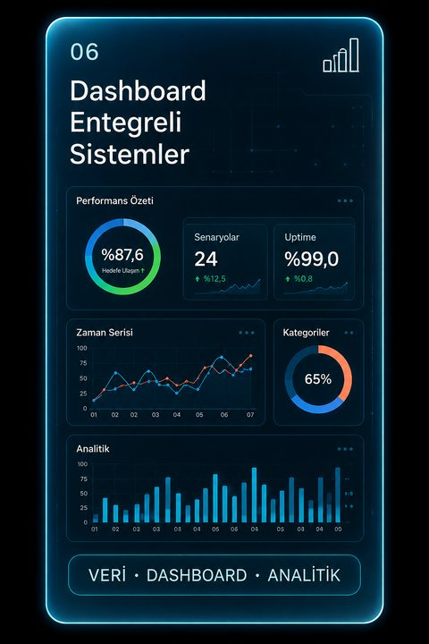
Yapay zeka, görsel bilgi işleme ve gerçek zamanlı akıllı sistemler üzerine uzmanlaşmış bir yazılım mühendisiyim (GNO: 3.12/4.0). Derin öğrenme, görüntü işleme ve üretken yapay zeka teknolojilerini kullanarak bilgisayarla görü hatları, AI destekli görsel uygulamalar ve etkileşimli çözümler geliştiriyorum. Görsel veri işlemeden model geliştirmeye, gerçek zamanlı uygulamalardan analitik platformlara kadar uçtan uca AI sistemleri kurma deneyimine sahibim.
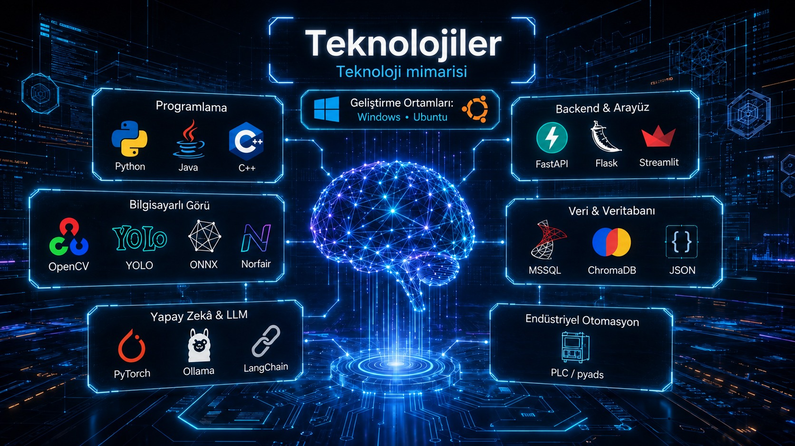
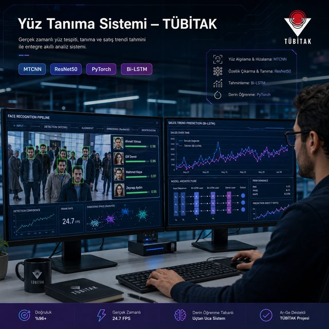
TÜBİTAK projesi kapsamında MTCNN ve ResNet50 kullanılarak yüksek performanslı bir biyometrik yüz tanıma çözümü geliştirildi. Ayrıca satış trendi tahmini için Bi-LSTM modelleri oluşturuldu.
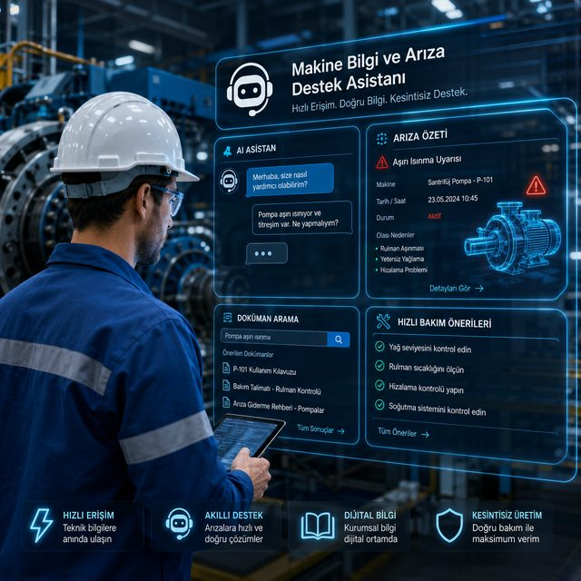
Makine kılavuzları ve teknik dokümanlar etkileşimli bir bilgi sistemine dönüştürüldü. RAG tabanlı erişim ve yerel LLM entegrasyonuyla sohbet üzerinden anlık arıza ve bakım desteği sağlandı.
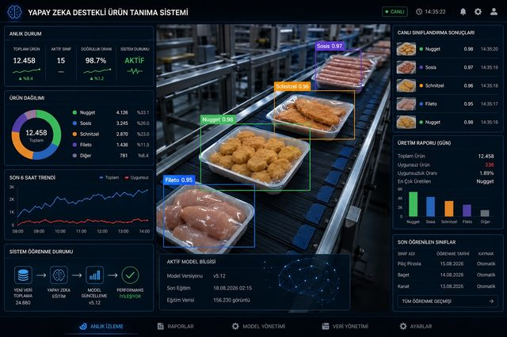
RTSP kamera akışlarından 13 ürün kategorisi algılanıp takip edildi; çevrim süresi ve verimlilik metrikleri analiz edildi. Gerçek üretim koşullarında yaklaşık %88 doğruluk oranına ulaşıldı.
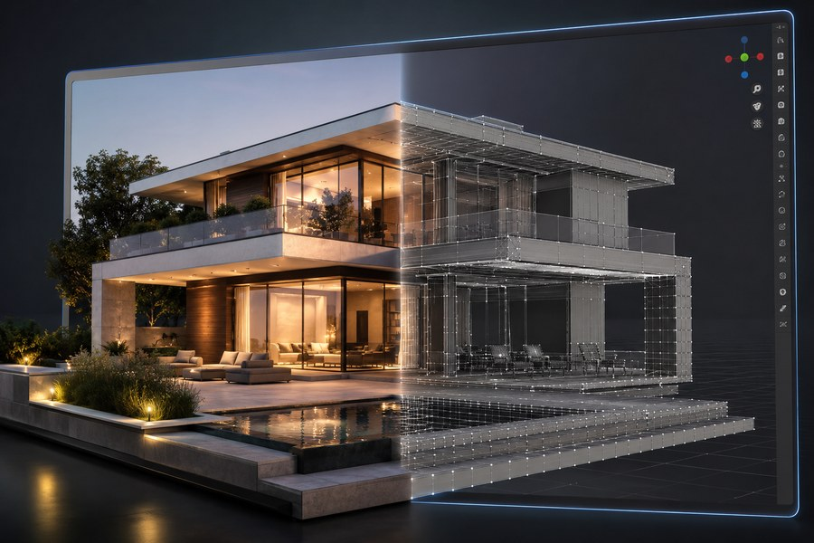
Üretken AI araçlarıyla dijital varlıklar üretildi ve Blender tabanlı mesh işlemeyle optimize edildi. AI destekli süreçler dijital içerik üretim hattına entegre edildi.
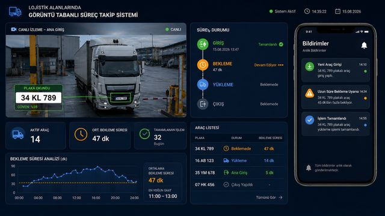
Görüntü tabanlı bir sistemle araçların giriş, bekleme, yükleme ve çıkış süreçleri gerçek zamanlı izlendi. Plaka tanıma ile araç kaydı otomatikleştirildi ve bekleme süreleri anlık olarak raporlandı.
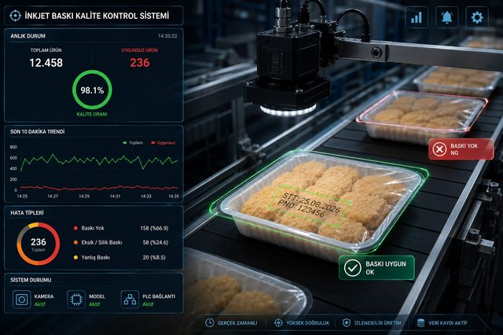
SICK endüstriyel kameralarla eksik veya hatalı inkjet baskıları tespit edildi. Beckhoff PLC ile entegre bir red mekanizması kuruldu ve yaklaşık %92 doğruluk oranına ulaşıldı.
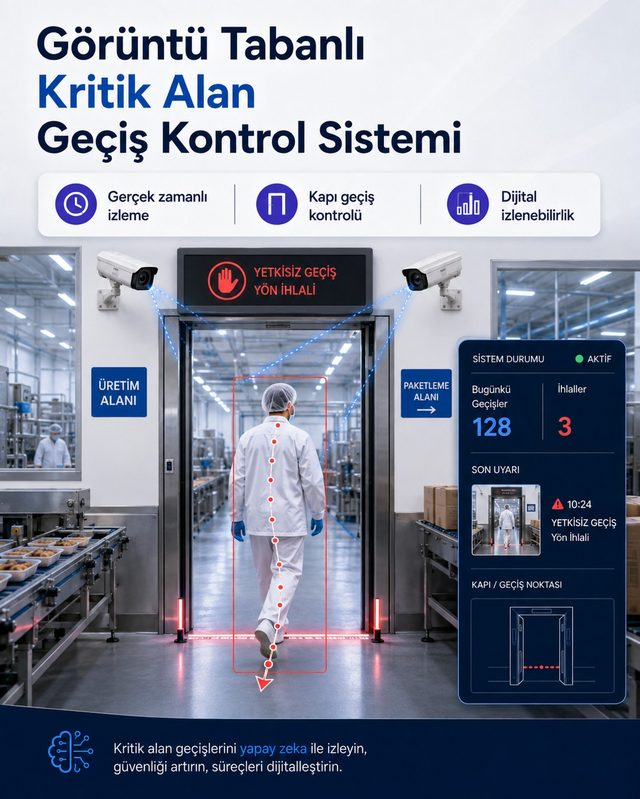
Kontrollü bölgeler arasındaki hareketler gerçek zamanlı izlendi. Raspberry Pi tabanlı donanım entegrasyonuyla anlık sesli ve görsel uyarılar tetiklendi.
Evrişimli sinir ağları, CNN mimarileri, transfer öğrenme ve model optimizasyonu.
Veri analitiği, istatistiksel modelleme, veri ön işleme ve temel veri bilimi ilkeleri.
Veri analizi sonuçlarını etkili şekilde iletmek için görselleştirme teknikleri ve araçları.
Veritabanı tasarımı, ilişkisel modelleme ve kapsamlı veri modelleme prensipleri.
Ağ güvenliği, siber tehditler, saldırı vektörleri ve temel koruma yöntemleri.
Linux komut satırı, dosya sistemi yönetimi, shell scripting ve sistem yönetimi temelleri.
Bilgisayarlı görü, edge AI, üretken yapay zeka ve yazılım mühendisliği alanlarında tam zamanlı, yarı zamanlı veya proje bazlı iş birliklerine açığım. Endüstriyel otomasyon ve LLM tabanlı uygulamalarda deneyimliyim.